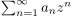
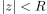
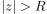
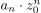
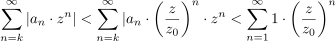
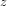
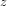

Konvergenzverhalten von Potenzreihen in Abhängigkeit von dem Konvergenzradius
1. Satz
Sei  eine Potenzreihe mit Konvergenzradius  .
Dann folgt:
.
Dann folgt:
- ist , so konvergiert die Reihe konvergent
- ist , so divergiert die Reihe
2. Beweis
2.1. a)
Nach dem Nullfolgenkriterium gilt, dass  eine Nullfolge sein muss.
Daraus folgt, dass für fast alle  gilt: $ | an ⋅ z0n | < 1$, das heißt wir können fast alle summen majorisieren durch
gilt: $ | an ⋅ z0n | < 1$, das heißt wir können fast alle summen majorisieren durch

1
2.2. b)
Es gilt, dass ein  existiert, so dass gilt und folglich die Potenzreihe für nicht absolut konvergiert.
Falls  konvergieren würde, so würde auch absolut konvergiert, also Beweis durch Widerspruch
existiert, so dass gilt und folglich die Potenzreihe für nicht absolut konvergiert.
Falls  konvergieren würde, so würde auch absolut konvergiert, also Beweis durch Widerspruch